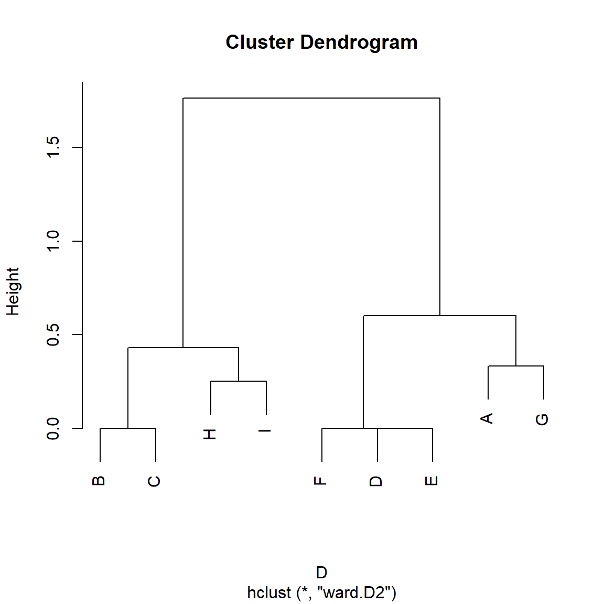

As we noted in the role equivalence handout, for odd reasons, classical approaches to structural similarity in networks used distance metrics but did not measure similarity directly. More recent approaches from network and information science prefer to define vertex similarity using direct similarity measures based on local structural characteristics, like node neighborhoods.
Mathematically, similarity is a less stringent (but also less well-defined compared to distances) relation between pairs of nodes in a graph than distance, so it can be easier to work with in most applications.
For instance, similarity is required to be symmetric (\(s_{ij} = s_{ji}\) for all \(i\) and \(j\)) and most metrics have reasonable bounds (e.g., 0 for least similar and 1.0 for maximally similar). Given such a bounded similarity we can get to dissimilarity by subtracting one: \(d_{ij} = 1 - s_{ij}\)
Basic Ingredients of Vertex Similarity Metrics
Consider two nodes and the set of nodes that are the immediate neighbors to each. In this case, most vertex similarity measures will make use of three pieces of information:
The number of common neighbors \(p\).
The number of actors \(q\) who are connected to node \(i\) but not to node \(j\).
The number of actors \(r\) who are connected to node \(j\) but not to node \(i\).
In the simplest case of the binary undirected graph then these are given by:
library(networkdata)library(igraph)library(stringr) #using stringr to change names from all caps to title case g <- movie_267V(g)$name <-str_to_title(V(g)$name) g <-delete_vertices(g, degree(g) <=3) #deleting low degree vertices A <-as.matrix(as_adjacency_matrix(g)) A.p <- A %*% A #common neighbors matrix A.q <- A %*% (1- A) #neighbors of i not connected to j A.r <- (1- A) %*% A #neighbors of j not connected to i A.p[1:10, 1:10]
Note that while \(\mathbf{A}(p)\) is necessarily symmetric, neither \(q\) nor \(r\) have to be. Barney has many more neighbors that Bam-Bam is not connected to than vice versa. Also note that the \(\mathbf{A}(r)\) matrix is just the transpose of the \(\mathbf{A}(q)\) matrix \(\left[\mathbf{A}(q)\right]^T\) in the undirected case.
So the most obvious measure of similarity between two nodes is simply the number of common neighbors (Leicht, Holme, and Newman 2006):
\[
s_{ij} = p_{ij}
\]
We have already seen a version of this in the directed case when talking about the HITS algorithm (Kleinberg 1999), which computes a spectral (eigenvector-based) ranking based on the matrices of common in and out-neighbors in a directed graph.
In this case, similarity can be measured either by the number of common in-neighbors or the number of common out-neighbors.
If the network under consideration is a (directed) citation network with nodes being papers and links between papers defined as a citation from paper \(i\) to paper \(j\), then the number of common in-neighbors between two papers is their co-citation similarity (the number of other papers that cite both papers), and the number of common out-neighbors is their bibliographic coupling similarity (the overlap in their list of references).
One problem with using unbounded quantities like the sheer number of common (in or out) neighbors to define node similarity is that they are only limited by the number of nodes in the network (Leicht, Holme, and Newman 2006). Thus, an actor with many neighbors will end up having lots of other neighbors in common with lots of other nodes, which will mean we would count them as “similar” to almost everyone.
Normalized Similarity Metrics
Normalized similarity metrics deal with this issue by adjusting the raw similarity based on \(p\) using the number of non-shared neighbors \(q\) and \(r\).
The two most popular versions of normalized vertex similarity scores are the Jaccard index and the cosine similarity (sometimes also referred to as the Salton Index).
The Jacccard index is given by:
\[
s_{ij}^J = \frac{p}{p + q + r}
\tag{1}\]
Which is the ratio of the size of the intersection of the neighborhoods of the two nodes (number of common neighbors \(p\)) divided by the size of the union of the two neighborhoods (\(p + q + r\)). When the neighborhoods of the two nodes coincide (e.g., \(q = 0\) and \(r = 0\)) then Equation 1 turns into \(\frac{p}{p} = 1.0\), which is the maximum Jaccard similarity between two nodes.
In our example, we can compute the Jaccard similarity as follows:
Which is the ratio of the number of common neighbors divided by the product of the square root of the degrees of each node (or the square root of the product which is the same thing), since \(p\) + \(q\) is the degree of node \(i\) and \(p\) + \(r\) is the degree of node \(j\).
When the neighborhoods of the two nodes coincide (e.g., \(q = 0\) and \(r = 0\)) then Equation 2 turns into \(\frac{p}{\sqrt{p^2}} = \frac{p}{p} = 1.0\).
In our example, we can compute the Cosine similarity as follows:
Which is given by the ratio of twice the number of common neighbors divided by the sum of the number of total neighbors of the two nodes (hence the number of common neighbors \(p\) shows up twice also in the denominator). When the neighborhoods of the two nodes coincide (e.g., \(q = 0\) and \(r = 0\)) then Equation 3 turns into \(\frac{2p}{2p} = 1.0\).
In our example, we can compute the Dice similarity as follows:
Once again, showing results comparable to the previous.
Note, that all three of these pairwise measures of similarity are bounded between zero and one, with nodes being maximally similar to themselves and with pairs of distinct nodes being maximally similar when they have the same set of neighbors (e.g., they are structurally equivalent).
Leicht, Holme, and Newman (2006) introduce a variation on the theme of normalized structural similarity scores. Their point is that maybe we should care about nodes that are surprisingly similar given some suitable null model. They propose the configuration model as such a null model. This model takes a graph with the same degree distribution as the original but with connections formed at random as reference.
The LHN similarity index (for Leicht, Holme, and Newman) is then given by:
Which can be seen as a variation of the cosine similarity defined earlier. Note that in contrast to the other similarities we have considered which reach a maximum of 1.0 when the two nodes have the same neighborhood (\(q = 0\) and \(r = 0\)) the LHN similarity only reaches that limit for two nodes that are adjacent and don’t have any other neighbors (\(p=1\)).
For nodes with identical neighborhoods, the maximum LHN score will always be \(\frac{p}{p^2} = \frac{1}{p}\) which means that it will decrease as node degree increases, even when the two nodes share the same neighbors. This makes sense, since it is much more “surprising” for two nodes to share neighbors when they only have a few friends than we they have lots of friends.
In our example, we can compute the LHN similarity as follows:
Which, once again, produces similar results to what we found before. Note, however, that the LHN is not naturally maximal for self-similar nodes.
We can package all that we said before into a handy function that takes a graph as input and returns all four normalized similarity metrics as output:
vertex.sim <-function(x) { A <-as.matrix(as_adjacency_matrix(x)) A.p <- A %*% A A.q <- A %*% (1- A) A.r <- (1- A) %*% A J <- A.p / (A.p + A.q + A.r) C <- A.p / (sqrt(A.p + A.q) *sqrt(A.p + A.r)) D <- (2* A.p) / ((2* A.p) + A.q + A.r) L <- A.p / ((A.p + A.q) * (A.p + A.r))return(list(J = J, C = C, D = D, L = L)) }
Similarity and Structural Equivalence
All normalized similarity measures bounded between zero and one (like Jaccard, Cosine, and Dice) also define a distance on each pair of nodes which is equal to one minus the similarity. So the cosine distance between two nodes is one minus the cosine similarity, and so on for the Jaccard and Dice indexes.1
Because they define distances, this also means that these approaches can be used to find approximately structurally equivalent classes of nodes in a graph just like we did with the Euclidean and correlation distances.
For instance, consider our toy graph from our previous discussion showcasing four structurally equivalent sets of nodes:
A toy graph demonstrating structural equivalence.
The cosine similarity matrix for this graph is:
W <-as.matrix(as_adjacency_matrix(h)) W.p <- W %*% W W.q <- W %*% (1- W) W.r <- (1- W) %*% W C <- W.p / (sqrt(W.p + W.q) *sqrt(W.p + W.r))round(C, 2)
A B C D E F G H I
A 1.00 0.26 0.26 0.58 0.58 0.58 0.67 0.00 0.00
B 0.26 1.00 1.00 0.00 0.00 0.00 0.26 0.67 0.67
C 0.26 1.00 1.00 0.00 0.00 0.00 0.26 0.67 0.67
D 0.58 0.00 0.00 1.00 1.00 1.00 0.58 0.25 0.25
E 0.58 0.00 0.00 1.00 1.00 1.00 0.58 0.25 0.25
F 0.58 0.00 0.00 1.00 1.00 1.00 0.58 0.25 0.25
G 0.67 0.26 0.26 0.58 0.58 0.58 1.00 0.00 0.00
H 0.00 0.67 0.67 0.25 0.25 0.25 0.00 1.00 0.75
I 0.00 0.67 0.67 0.25 0.25 0.25 0.00 0.75 1.00
Note that structurally equivalent nodes have similarity scores equal to 1.0. In this case, the distance matrix is given by:
D <-1- Cround(D, 2)
A B C D E F G H I
A 0.00 0.74 0.74 0.42 0.42 0.42 0.33 1.00 1.00
B 0.74 0.00 0.00 1.00 1.00 1.00 0.74 0.33 0.33
C 0.74 0.00 0.00 1.00 1.00 1.00 0.74 0.33 0.33
D 0.42 1.00 1.00 0.00 0.00 0.00 0.42 0.75 0.75
E 0.42 1.00 1.00 0.00 0.00 0.00 0.42 0.75 0.75
F 0.42 1.00 1.00 0.00 0.00 0.00 0.42 0.75 0.75
G 0.33 0.74 0.74 0.42 0.42 0.42 0.00 1.00 1.00
H 1.00 0.33 0.33 0.75 0.75 0.75 1.00 0.00 0.25
I 1.00 0.33 0.33 0.75 0.75 0.75 1.00 0.25 0.00
And a hierarchical clustering on this matrix reveals the structurally equivalent classes:
D <-as.dist(D) h.res <-hclust(D, method ="ward.D2")plot(h.res)

In the Flintstones network, we could then find structurally equivalent blocks from the similarity analysis as follows (using Cosine):
D <-as.dist(1-vertex.sim(g)$C) h.res <-hclust(D, method ="ward.D2") #hierarchical clustering
We can then plot the resulting clusters into a dendrogram:
plot(h.res)
Which reveals four major blocks of structurally similar actors.
We can then extract our blocks just like we did with the Euclidean distance hierarchical clustering results in our discussion of structural equivalence:
blocks <-cutree(h.res, k =4) #requesting four blocks blocks
This analysis puts \(\{\) Barney, Betty, Fred, Lava, Mrs. Slate, Slate, Wilma \(\}\) in the second block of equivalent actors (shown as the right-most cluster in the dendrogram). Which seems about right!
References
Kleinberg, Jon M. 1999. “Authoritative Sources in a Hyperlinked Environment.”Journal of the ACM (JACM) 46 (5): 604–32.
Leicht, Elizabeth A, Petter Holme, and Mark EJ Newman. 2006. “Vertex Similarity in Networks.”Physical Review E—Statistical, Nonlinear, and Soft Matter Physics 73 (2): 026120.
Footnotes
Note that for a measure to count as a true metric distance, the triangle inequality must be respected (e.g., \(d(x,z) \leq d(x,y) + d(z,y)\)). This is the case for the complement of the Jaccard and the Cosine similarities.↩︎